Hoy recorrerás la comunidad de La Cueva de forma interactiva.
Conocerás su ubicación, su entorno natural, cómo viven las personas y los principales retos que enfrenta.
La comunidad de La Cueva se encuentra en el Ejido Morelos, en el municipio de Rincón de Romos, Aguascalientes.
Es una zona rural caracterizada por su cercanía a terrenos agrícolas, caminos de acceso sencillos y poca densidad poblacional.
Se conecta con otras comunidades a través de carreteras y caminos rurales.
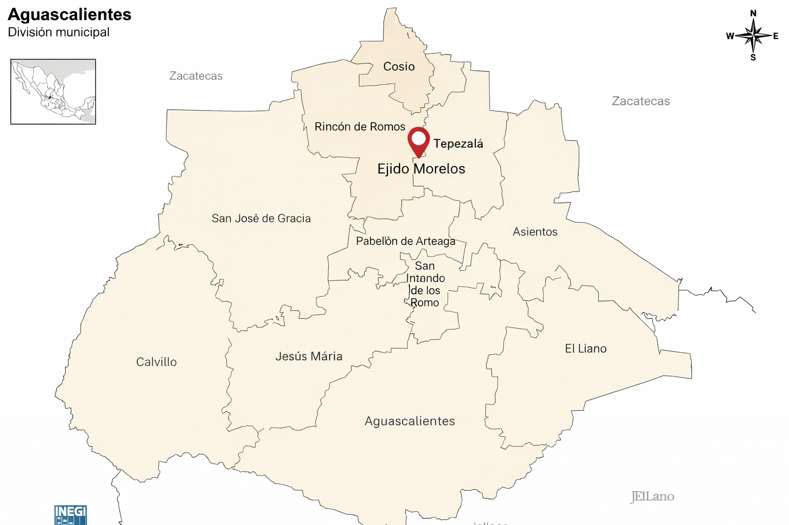
¿Está cerca de montañas o es zona plana?
¿Qué tipo de clima predomina?
¿La zona es urbana o rural?
¿A qué se dedica principalmente la población?
La distribución de la comunidad depende del terreno, la actividad agrícola y la organización de sus habitantes.
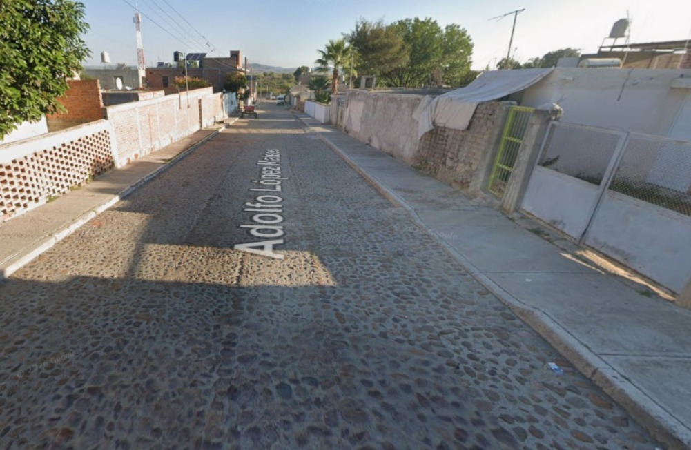
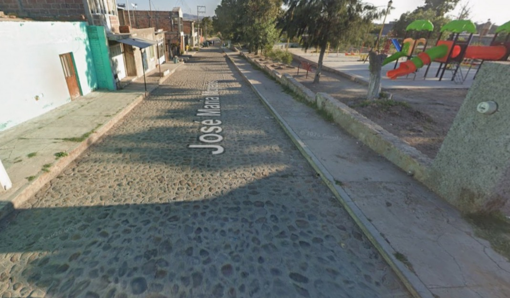
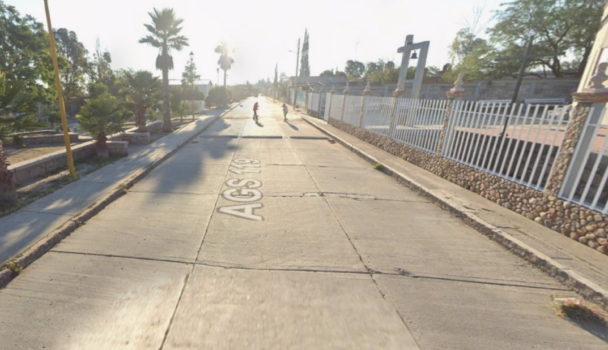
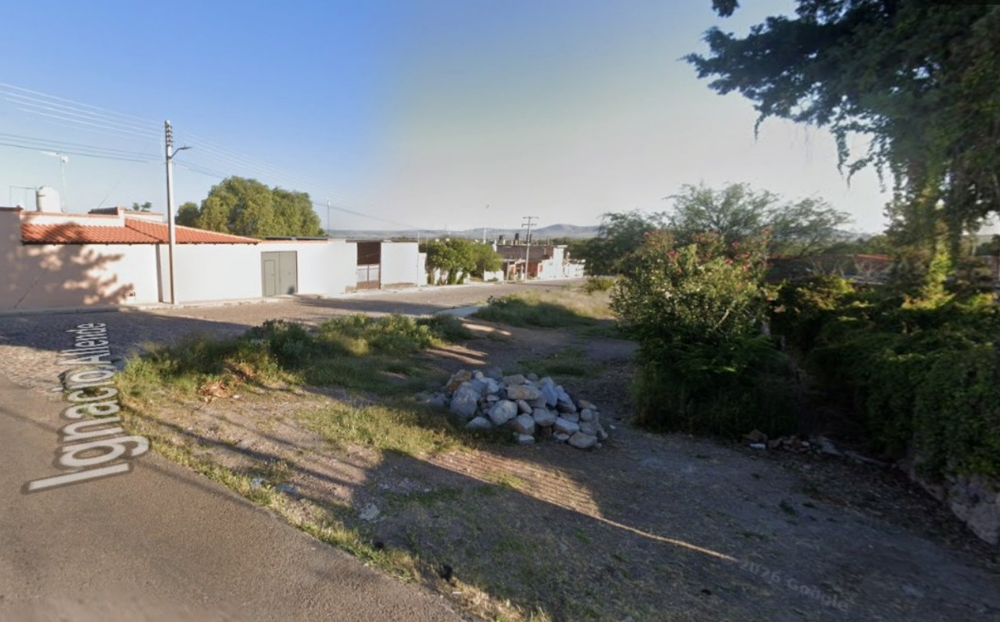
Las calles pueden ser de tierra o pavimento básico.
En zonas rurales, la distribución no siempre es uniforme.
Las viviendas pueden estar separadas por terrenos agrícolas.
El crecimiento de la comunidad suele ser progresivo y no planificado completamente.
El entorno natural de La Cueva es característico de zonas semiáridas.
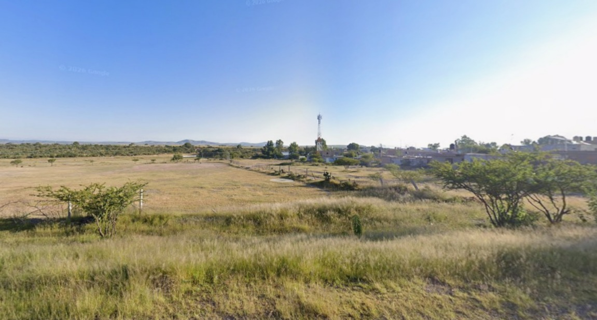
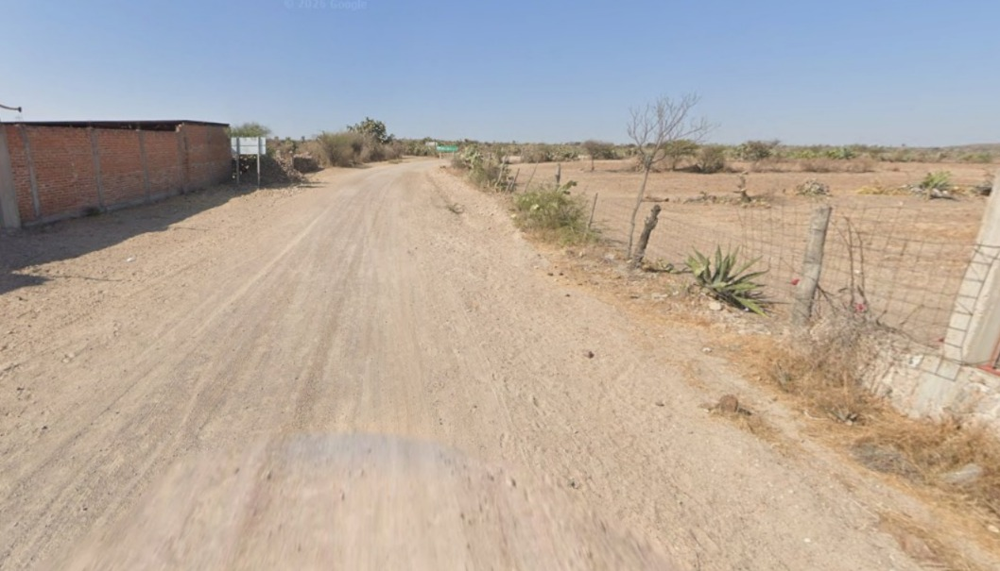
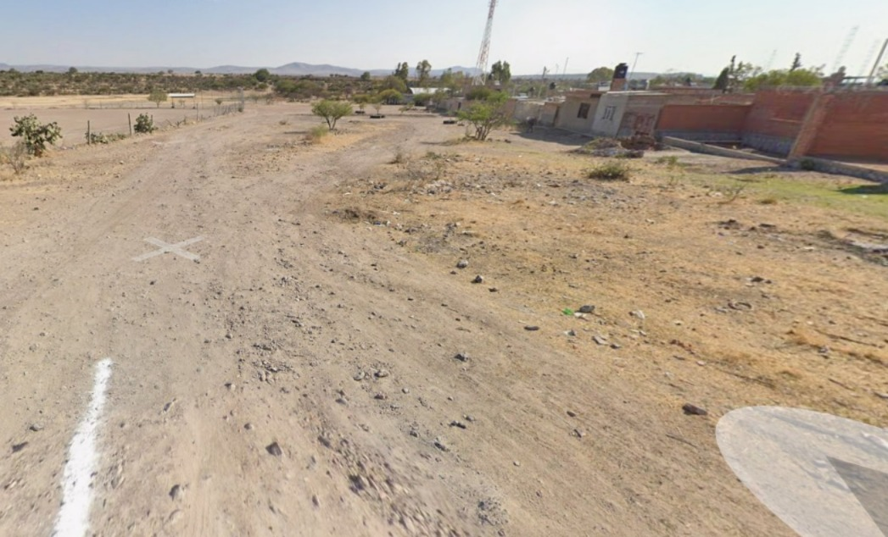
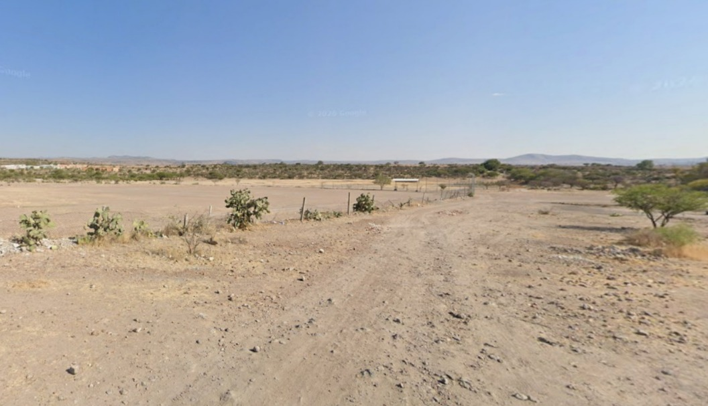
Predominan pastizales, nopales y vegetación resistente a la sequía.
El clima es seco, con temperaturas altas durante el día.
Las lluvias son escasas y se concentran en ciertos meses del año.
Se encuentran animales de campo como vacas, gallinas y caballos.
También hay aves y pequeños animales adaptados al clima.
La vida en la comunidad es tranquila y se centra en actividades diarias como el trabajo, la escuela y la convivencia.
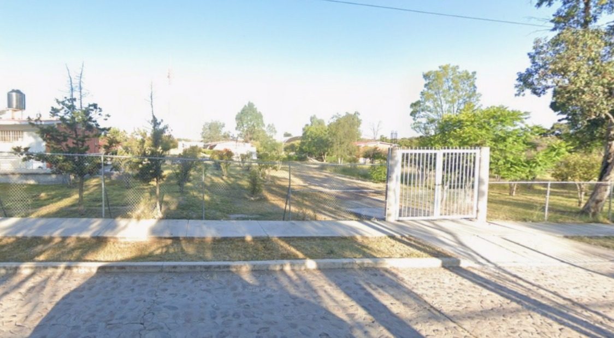
La escuela es un lugar fundamental para la educación y convivencia de los niños.
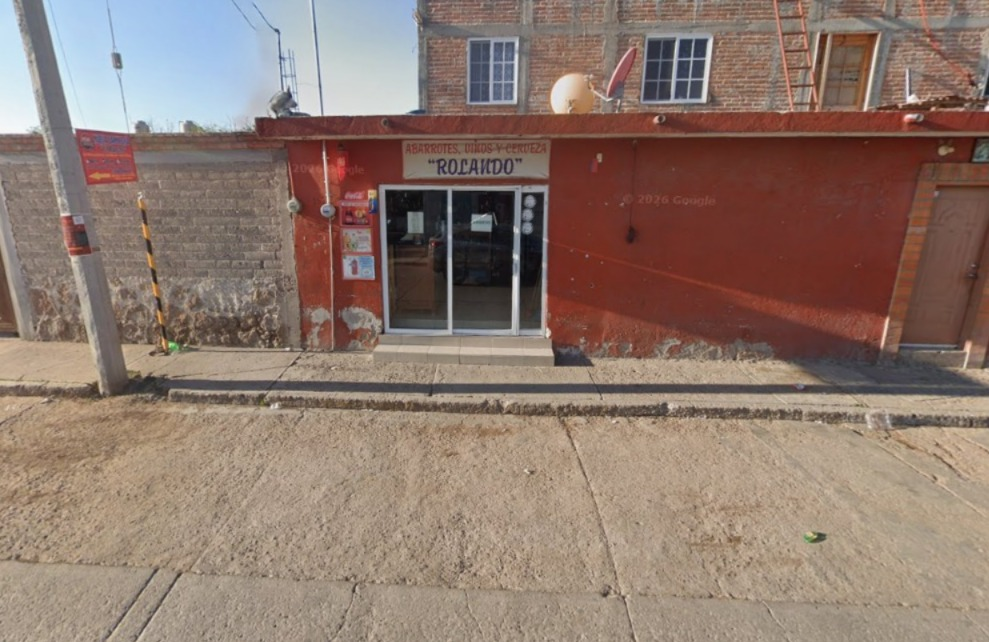
Las tiendas locales permiten el abastecimiento de productos básicos.
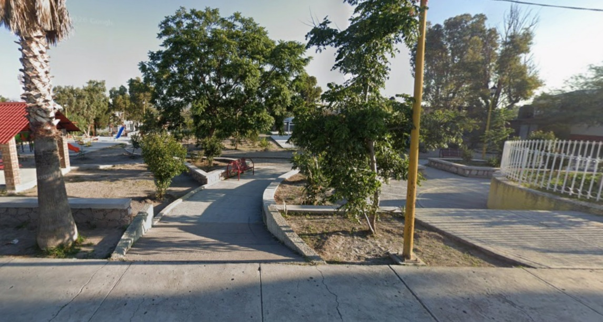
Es el punto de reunión para eventos, celebraciones y actividades sociales.
Como muchas comunidades rurales, La Cueva enfrenta diversos retos.
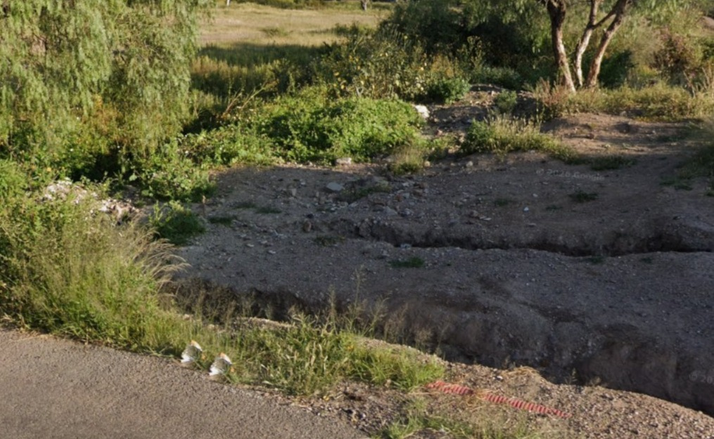
La falta de recolección adecuada puede generar contaminación.
Algunas calles presentan desgaste o falta de pavimentación.
En temporadas secas puede haber escasez de agua potable.